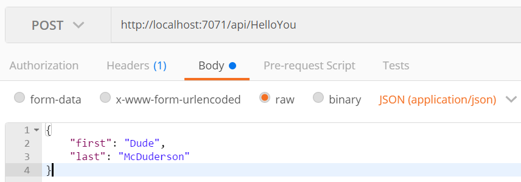

This is Step 3 in a series of posts where I will walk you through the steps required to create a simple Azure Function using F# Script, VS Code, and v1 of the Azure Functions Core Tools. I’ll cover everything from what you need to install, all the way through creating the function, and deploying it to your Azure account.
- Setup Your Environment
- Create the Function App
- Run the Function Locally ◀️
- Deploy the Function App to Azure
Run the Function Locally Link to heading
So you’ve got your function created and you want to test it out. First thing of course is to get it running.
You can do this on the CLI with the command: func host start. Or you can leverage one of the goodies the Azure Functions extension provided us.
Remember when you first opened the project and you were prompted to Initialize for optimal use with VS Code? Part of that process created a Tasks.json file in the .vscode folder in your workspace.
It contains a task to let you to start the Azure Functions Host without leaving VS Code.
{
"version": "2.0.0",
"tasks": [
{
"label": "Run Functions Host",
"identifier": "runFunctionsHost",
"type": "shell",
"command": "func host start",
"isBackground": true,
"presentation": {
"reveal": "always"
},
"problemMatcher": [
{
"owner": "azureFunctions",
"pattern": [
{
"regexp": "\\b\\B",
"file": 1,
"location": 2,
"message": 3
}
],
"background": {
"activeOnStart": true,
"beginsPattern": "^.*Stopping host.*",
"endsPattern": "^.*Job host started.*"
}
}
]
}
]
}
The single task in the file, as the label suggests, will let you run your function in the Azure Functions host. To invoke this task:
- Open the Command Pallette with
Ctrl+Shift+P - Type
task - Select
Tasks: Run Task - Select
Run Functions Host
You should now see a sweet ASCII lightning bolt in the integrated terminal of VS Code.
Voila! Your function is running. To stop it, press Ctrl+C in the terminal.
Create a Custom Keybinding Link to heading
This step is certainly not required. But if you’re like me, and you love simplifying your life with keyboard shortcuts, don’t skip over this!
You are going to use this task a lot. And the way we just had to invoke it is going to get real tedious after a while. Save yourself some time and keystrokes by setting up the following keyboard shortcut!
- Press
Ctrl+Shift+Pand type “keyboard” - Select “Preferences: Open Keyboard Shortcuts” (or just press
Ctrl+K Ctrl+S) - At the top of the window that just opened you’ll see some instructions for creating advanced customizations. That’s where we’re headed. Click on the
keybindings.jsonlink - In the
keybindings.jsonfile now open in the right-hand pane, add the following new keybinding:
{
"key": "ctrl+shift+r",
"command": "workbench.action.tasks.runTask",
"args": "Run Functions Host"
}
Now you can use Ctrl+Shift+R to trigger the task and startup the Azure Functions host in the Visual Studio Console!
Calling the Function From Postman Link to heading
Once you’ve started the Azure Functions host, the Terminal window should display a list of the available Http Functions in your app. Currently, there should be just the one: http://localhost:7071/api/HelloYou
Copy that address and fire up Postman. If you don’t have Postman, you can install it here. You could also use Curl, if you like, but I prefer Postman.
We are going to use Postman to make a POST to http://localhost:7071/api/WhoPickedWhat with the following JSON content:
{
"first": "Dude",
"last": "McDuderson"
}
Your Postman window should look like this:

Click Send and you should get the following response:
{
"Greeting@": "Hello Dude McDuderson!"
}
W@T Link to heading
Hooray! You got your response back. But what is up with that ‘@’ symbol in the property name?!
That annoying little artifact is because the default JSON serializer doesn’t handle F# record types all that well.
You see, to support the serialization of an immutable record type, the compiler creates mutable internal backing fields for each property in the record type. It names these fields based on their related record type property, but with an added ‘@’. And of course, these are the fields used by the serializer, and hence the ones that show up in our response.
So how do we fix this?
We’ll need to swap out the default serializer for one that has better support for F# record types. Not surprisingly, we’ll use Json.NET.
In ASP.NET Web API this sort of customization is done at startup by modifying the JSON Serialization Settings on your HttpConfiguration object. Unfortunately, there’s no such thing in Azure Functions. Instead, we have to create a new JsonMediaTypeFormatter, set the ContractResolver to a better one provided by Json.NET, and pass it to each call to req.CreateResponse.
After making these changes, our function looks like this:
let Run(req: HttpRequestMessage, log: TraceWriter) =
async {
log.Info("Webhook was triggered!")
let! jsonContent = req.Content.ReadAsStringAsync() |> Async.AwaitTask
let jsonFormatter = System.Net.Http.Formatting.JsonMediaTypeFormatter()
jsonFormatter.SerializerSettings.ContractResolver
<- Newtonsoft.Json.Serialization.CamelCasePropertyNamesContractResolver()
try
let name = JsonConvert.DeserializeObject<Name>(jsonContent)
return req.CreateResponse(
HttpStatusCode.OK,
{ Greeting = sprintf "Hello %s %s!" name.First name.Last },
jsonFormatter)
with _ ->
return req.CreateResponse(HttpStatusCode.BadRequest)
} |> Async.StartAsTask
You can now re-send your Postman request and the ‘@’ sign should be gone.
Why is the default template like this? That is a fantastic question!

What’s Next Link to heading
Great job so far! We have just successfully called our function locally, and sorted out a lame quirk in the default F# template.
Let’s move on to Step 4 and Deploy the Function App to Azure!